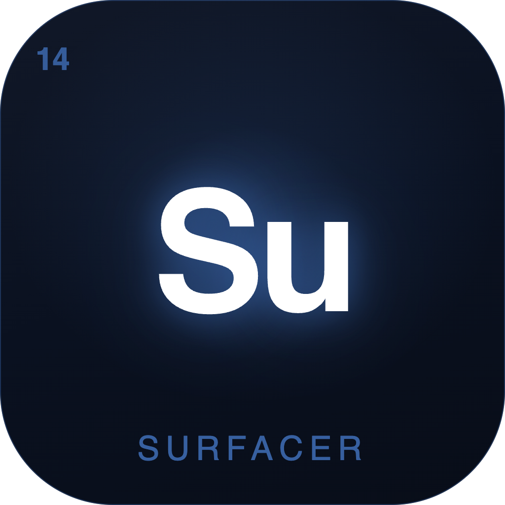

Surfacer
One surface for every project you’re juggling.
A macOS board of cards, screenshots, status and tags — that follows you across your OS, including over full-screen apps.
Active
Paused
Shipped
Idea
Rust · Tauri 2 · React
Vibe-coded with Claude Code